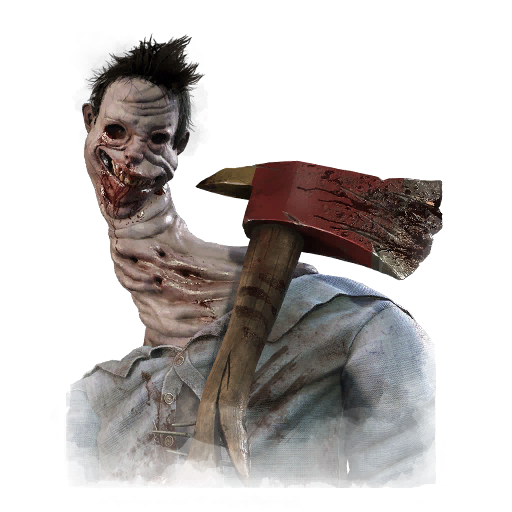

未知者 Unknown
- 难度
- 2
- 移速
- 4.6
- 恐惧范围
- 32 米
- 能力
- 未收到可翻译的英文游戏文本（"UVX" 不属于《黎明杀机》中的界面、道具或状态文本，可能是误输入或编码异常）。 请提供需要翻译的英文原文，例如： - 技能/天赋描述 - 附加品与道具名称 - 角色台词、警徽或文件内容 - 状态效果提示（如 Exhausted / Haste / Hooked 等） 我会在收到后直接输出对应的简体中文译文。
- 性别
- None (inhuman Entity that adapts its appearance as needed)
- 出身
- Unknown (Malevolent Entity)
- 演员
- Zoey Alexandria Wendorf (Blindlight, Transvoice Teacher)
背景故事
奥莉薇亚的硕士论文主题是都市传说及其起源。她认为都市传说与传统民间故事之间存在共通之处，并挑选了一个例子来论证自己的观点。未知者被认为是一个神秘而邪恶的存在，其罪孽之深令人发指——任何调查它的人几乎都会立刻招来死亡。至少，故事是这么讲的。而这样的故事还有很多。
其中一个故事讲的是，格林维尔的一名女子在满屋目击者面前，当众凭空消失。她的朋友在几周后试图调查此事，也同样消失了。警方束手无策。他们手中没有任何线索或方向，而这份谜团恰好形成了放大并传播都市传说的完美风暴。
奥莉薇亚没有回家过复活节假期，而是动身前往格林维尔展开调查。她开车到了镇上第二便宜的汽车旅馆，在一间弥漫着香烟、霉菌和酒臭的小房间里安顿下来。她把一面墙改造成了某种证据板，用胶带贴满了文章，以及全国各地疑似与未知者有关的失踪案件的各种推测。她用红线和黄图钉把这些线索串联起来。任何走进这间旅馆房的人，都会以为她疯了。
关于未知者的起源，有许多种说法。有人说，它是远古邪教召唤出的恶意实体；也有人认为，它是从51区逃出来的外星人。传说它在黑暗中滋长，夺走被它吞噬之人的声音，以此来引诱其他人——
专属技能
通用技能 任意杀手均可使用
苦涩低语
Bitter Murmur
淘汰弱者
Cull the Weak
捕鹿人
Deerstalker
煎熬
Distressing
咒术：命运愚者
Hex: Fortune's Fool
咒术：无人幸免于死
Hex: No One Escapes Death
咒术：狩猎快感
Hex: Thrill of the Hunt
黑暗中
In the Dark
隐秘
Insidious
铁掌
Iron Grasp
让他们等着
Keep Them Waiting
毫无保留
No Holds Barred
血狱钩：怪诞圣地
Scourge Hook: Monstrous Shrine
血狱钩：泣血之伤
Scourge Hook: Weeping Wounds
看他们逃窜
See How They Run
破碎希望
Shattered Hope
邋遢屠夫
Sloppy Butcher
暗影间谍
Spies from the Shadows
表现失常
Underperform
不依不饶
Unrelenting
耳语
Whispers
附加品
- 精贵 B级片海报 B-Movie Poster
- 稀有 模糊照片 Blurry Photo
- 活动 被黑暗捕获 Captured by the Dark
- 罕见 来源不明的装置 Device of Undisclosed Origin
- 传说 丢弃的牛奶盒 Discarded Milk Carton
- 精贵 足迹石膏 Footprint Cast
- 精贵 头版报道 Front-Page Article
- 传说 自制面具 Homemade Mask
- 精贵 催眠师的怀表 Hypnotist's Watch
- 活动 虹彩OSS报告 Iridescent OSS Report
- 罕见 最后的录音 Last Known Recording
- 罕见 推论笔记 Notebook of Theories
- 传说 冷门游戏卡带 Obscure Game Cartridge
- 稀有 刺破的眼球 Punctured Eyeball
- 稀有 幸运兔脚 Rabbit's Foot
- 传说 血清小瓶 Serum Vial
- 稀有 素描草稿 Sketch Attempt
- 罕见 被划破的背包 Slashed Backpack
- 精贵 消失的盒子 Vanishing Box
- 罕见 受害者地图 Victim's Map